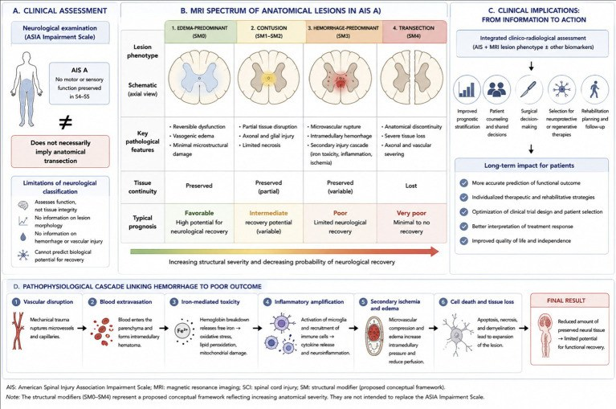
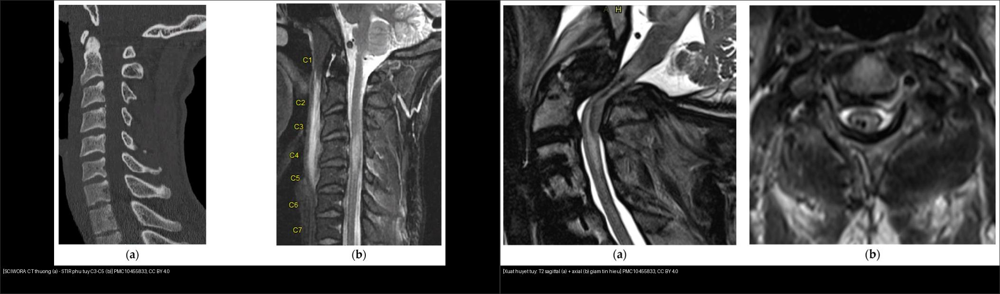
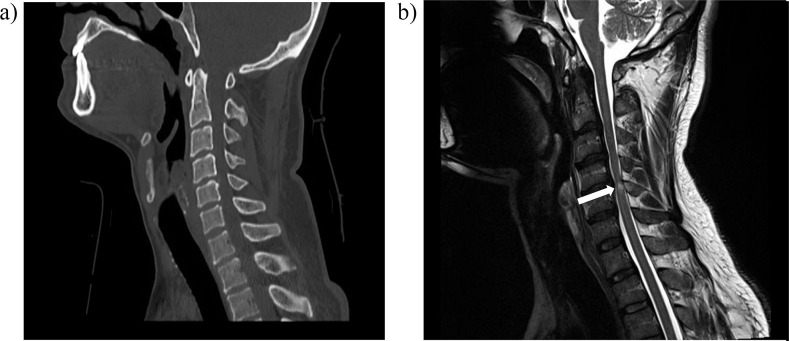
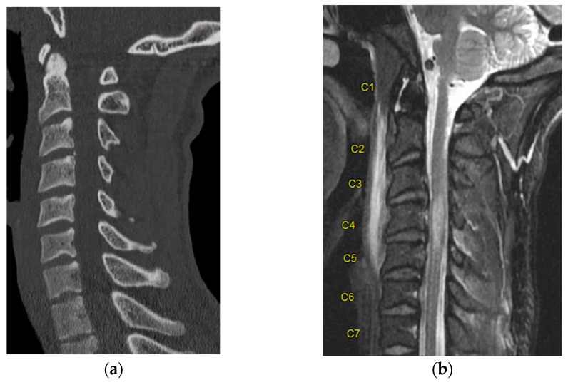
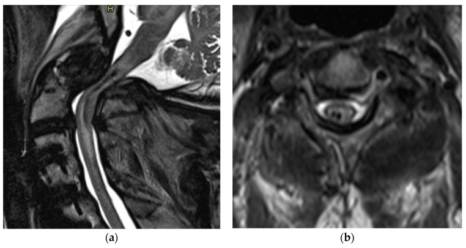

223 — Chấn thương tủy sống: thang ASIA & SCIWORA / Spinal cord injury
Tags: pattern:chan-thuong-tuy vung:cot-song score:ASIA
Mức chắc chắn (certainty): tổng hợp y văn (literature synthesis) — nhóm tự biên từ y văn mở (Front Neurol 2026, Life 2023, Qatar Med J 2021 CC BY); các ca trong quiz là ca nguyên văn (verbatim case) chép đúng tuổi – lâm sàng – chú thích gốc.
1. Tổng quan — thang ASIA đo lâm sàng, MRI đo mô học
- ASIA/ISNCSCI (International Standards for Neurological Classification of Spinal Cord Injury) chấm trên 28 dermatome (C2–S4/S5) × 2 phương thức (cảm giác nhẹ – light touch + cảm giác đau – pinprick) và 10 cặp cơ chìa khóa (C5, C6, C7, C8, T1, L2, L3, L4, L5, S1) thang 0–5. Từ đó suy ra mức thần kinh (neurological level of injury — NLI), mức cảm giác, mức vận động.
- Thang khiếm khuyết ASIA (AIS) A–E: A = hoàn toàn (không còn cảm giác/vận động ở S4–S5); B = không hoàn toàn cảm giác (có cảm giác nhưng không vận động dưới mức, gồm S4–S5); C = không hoàn toàn vận động, > một nửa cơ chìa khóa dưới mức yếu (điểm < 3); D = không hoàn toàn vận động, ≥ một nửa cơ chìa khóa dưới mức đạt ≥ 3; E = bình thường. Chốt của "không hoàn toàn" là bảo tồn vùng cùng (sacral sparing): cảm giác S4–S5, cảm giác sâu hậu môn (deep anal pressure), co cơ hậu môn tự ý — mất cả ba = AIS A.
- TẠI SAO ASIA A (lâm sàng "hoàn toàn") KHÔNG đồng nghĩa tủy đứt về giải phẫu: tổn thương sinh hóa/vi mạch có thể chặn dẫn truyền qua vùng tủy còn LIÊN TỤC; MRI vì thế là "nhãn mô học" độc lập. Trên AIS A, MRI vẫn hay thấy tủy liên tục, và kiểu tín hiệu (phù vs xuất huyết vs đứt) dự báo hồi phục khác hẳn nhau (Front Neurol 2026; Serratrice N., PMC13467916).
- Vật lý tín hiệu — TẠI SAO đọc được bản chất mô: phù tủy (edema) = nước ngoại bào tăng → T2W tăng tín hiệu (T1W gần bình thường), không sắt; xuất huyết tủy (hemorrhage) = hemoglobin/deoxyhemoglobin + hemosiderin (sắt từ tính) gây mất tín hiệu cục bộ, T2W TỐI + "blooming" trên chuỗi nhạy từ GRE/SWI; đứt tủy (transection) = mất liên tục thật. Xuất huyết nặng hơn phù vì vỡ vi mạch + dòng thác viêm/thiếu máu thứ phát gây chết tế bào không hồi phục.
- Ngưỡng định lượng nằm lòng: đường kính ống sống cổ ≤ 13 mm hoặc tỷ lệ Pavlov/Torg < 0,8** = hẹp ống bẩm sinh (dễ SCIWORA); **xuất huyết tủy kéo dài ≥ 30 mm hoặc chiếm > 50% diện cắt ngang = tiên lượng rất xấu; mục tiêu MAP 85–90 mmHg trong 5–7 ngày; giải ép < 24 giờ; methylprednisolon (NASCIS) 30 mg/kg bolus + 5,4 mg/kg/giờ × 23 giờ.

Sơ đồ tổng hợp: (A) khám lâm sàng ASIA (AIS A = mất cảm giác/vận động S4–5, KHÔNG đồng nghĩa đứt tủy); (B) phổ tổn thương giải phẫu trên MRI — tụ máu ngoài màng (SM0), tủy mềm (SM1–SM2), xuất huyết (SM3), đứt (SM4) với tính liên tục mô + tiên lượng; (C) dòng thác 6 bước từ vỡ vi mạch → phù/xuất huyết → viêm → thiếu máu thứ phát → chết tế bào. Các "SM0–SM4" là khung đề xuất, KHÔNG thay thế thang ASIA. Nguồn: Serratrice N., Front Neurol 2026 (PMC13467916), CC BY 4.0.2. Mẫu hình + chẩn đoán phân biệt theo bối cảnh chấn thương (Gamut)
- Đau cổ + tê/yếu tay chân + CT BÌNH THƯỜNG: SCIWORA — đặc biệt trẻ em (cột sống non: dây chằng lỏng, diện khớp nông/ngang, cốt hóa chưa hoàn tất → tủy "va đập" mà xương không gãy) và người ≥ 50 tuổi hẹp ống bẩm sinh. Tổng quan 848 ca trẻ (< 18 tuổi): MRI có ở 399 ca — 46% tổn thương nội tủy (Type IIb), 39% MRI bình thường ("SCIWORA thật", Type I), 9% phối hợp, 6% ngoài tủy; AIS A lúc đầu 46,25% nhưng lúc theo dõi AIS E tăng tới 49,78%; 66,2% cải thiện thần kinh; 95,41% bảo tồn, chỉ 4,59% mổ (PMC12429215).
- Liệt mềm + mất cảm giác dưới mức + gù/di lệch: gãy–mất vững cột sống, chấn thương dịch chuyển (translational) — soi 3 cột Denis + TLICS (bài
221). - Yếu ưu thế hai tay > hai chân: hội chứng tủy trung tâm (central cord syndrome) — thường do tăng duỗi cổ trên nền hẹp ống, tiên lượng tốt nhất trong nhóm không hoàn toàn.
- Mất vận động + cảm giác đau/dị cảm MẤT, cảm giác sâu = 0 dưới mức: hội chứng tủy trước (anterior cord) — do tổn thương động mạch tủy trước; tiên lượng vận động xấu.
- Mất cảm giác đau/nhiệt MỘT bên + mất cảm giác sâu/vận động bên kia: Brown-Séquard (hemisection) — tiên lượng đi lại khá.
- Liệt hai chi dưới + bí tiểu + giảm trương lực + mất phản xạ: chùm đuôi ngựa (cauda equina) — cấp cứu ngoại khoa.
- Chấn thương "nhẹ" ở người viêm cột sống dính (AS): gãy ngang mất vững cả 3 cột (kiểu Chance) — không được coi nhẹ.
3. Bảng so sánh phân biệt (ma trận đối chiếu)
| Thực thể (entity) | Hình ảnh điển hình (CT/MRI) | Chốt vào (rule-in) | Chốt loại (rule-out) | Gợi ý xác nhận |
|---|---|---|---|---|
| SCIWORA | CT/X-quang bình thường + MRI tủy bất thường (phù ± xuất huyết) | Lâm sàng tủy + hình xương bình thường + MRI (+), trẻ/người hẹp ống (canal ≤ 13 mm, Torg < 0,8) | Gãy/trật thấy trên CT → không phải SCIWORA | MRI T2/STIR toàn cột sống + theo dõi khởi phát muộn |
| Phù tủy (edema) thuần | T2W tăng tín hiệu lan, T1W gần bình thường, KHÔNG tối trên GRE/SWI | T2 sáng đơn thuần, không "blooming" | T2 tối + blooming → đã có xuất huyết | MRI theo dõi, tiên lượng khá hơn |
| Xuất huyết tủy (hemorrhagic contusion) | T2W TỐI + blooming trên GRE/SWI ± viền phù quanh | Tín hiệu tối T2/GRE trong tủy = máu | Chỉ T2 sáng → phù thuần | Đo chiều dài (≥ 30 mm) + % diện cắt ngang (> 50%) = rất xấu |
| Đứt tủy (transection) | Mất liên tục tủy, hai đầu co kéo ± phù/xuất huyết hai đầu | AIS A + MRI đứt hoàn toàn | Một phần liên tục → không gọi đứt | Hội chẩn ngoại + tiên lượng rất xấu |
| AIS A "lâm sàng hoàn toàn" nhưng tủy liên tục | Khám AIS A nhưng MRI còn dải mô liên tục | Mất sacral sparing (S4–5) → chấm AIS A | Có bất kỳ sacral sparing → KHÔNG phải A | ISIosC/ASIA chuẩn hóa + MRI để tiên lượng |
| Tụ máu ngoài màng tủy (SM0) | Khối thấu kính ngoài màng, chèn túi màng cứng, tín hiệu theo tuổi máu | Chèn ép ngoài màng tiến triển + liệt tăng dần | Thấm ngoài màng không chèn → theo dõi | Mổ tối khẩn khi liệt tiến triển |

*Trái: (a) CT cổ bình thường nhưng (b) STIR tăng tín hiệu tủy C3–C5 = tủy mềm/phù (SCIWORA). Phải: (a) T2 sagittal + (b) T2 axial mất tín hiệu trong tủy = xuất huyết tủy — tiên lượng xấu hơn hẳn phù thuần. Ảnh ghép letterbox từ 2 hình của cùng nguồn: Hussain O et al., Life 2023 (PMC10455833), CC BY 4.0.*4. Protocol chụp + thang ASIA & flowchart
- CT cột sống lát mỏng ≤ 1 mm + dựng 3D mọi chấn thương cột sống; MRI toàn cột sống (T2W + STIR, ± GRE/SWI) khi có dấu hiệu tủy hoặc CT bình thường mà lâm sàng tủy (nghi SCIWORA). CT KHÔNG loại trừ được tổn thương tủy — chỉ MRI thấy tủy.
- Huyết động: giữ MAP 85–90 mmHg trong 5–7 ngày (AANS/CNS 2013); tránh tụt < 65 mmHg. Corticoid: NASCIS (MPSS 30 mg/kg + 5,4 mg/kg/giờ × 23 giờ, nếu trong 8 giờ) KHÔNG khuyến cáo thường quy (AANS/CNS 2013) — bàn ca theo ca.
- Thời điểm mổ: giải ép < 24 giờ — STASCIS cho thấy tỷ lệ cải thiện AIS ≥ 2 bậc cao hơn (OR ~2,8).
- Thang/khung điểm MRI: BASIC (Brain and Spinal Injury Center) 0–4 — 0 tủy bình thường, 1 phù T2 đơn thuần, 2 phù + xuất huyết một phần, 3 xuất huyết tủy hoàn toàn, 4 đứt tủy (+1 điểm nếu ≤ 1 đốt sống)... điểm càng cao tiên lượng vận động càng xấu. Khung SM0–SM4 (Front Neurol 2026) là cách trình bày tương tự, mang tính đề xuất.
flowchart TD
A[Chấn thương + dấu hiệu tủy] --> B{CT/X-quang gãy-trật?}
B -->|Có| C[Chấn thương cột sống mất vững: bài 221 + TLICS]
B -->|Không| D[SCIWORA: MRI T2/STIR toàn cột sống]
D --> E{MRI tủy?}
E -->|T2 sáng đơn thuần| F[Phù thuần: tiên lượng khá + MAP 85-90]
E -->|T2 tối/blooming| G[Xuất huyết: tiên lượng xấu, đánh giá > 30mm / >50% cắt ngang]
E -->|Mất liên tục| H[Đứt tủy: tiên lượng rất xấu]
A --> I[Chấm AIS A-E: chốt là sacral sparing S4-S5]
I --> J{AIS A?}
J -->|Có, mất sacral| K[Hoàn toàn: theo dõi AIS + MRI tiên lượng]
J -->|Không: có sacral| L[Không hoàn toàn: C/D theo điểm cơ chìa khóa]
5. Biến thể bình thường và cạm bẫy
- SCIWORA khởi phát MUỘN (latent): thần kinh bình thường lúc đầu rồi yếu dần trong ~30 phút đến 4 ngày (Pang) — phải dặn theo dõi và bất động cổ, không cho về sớm; tái phát (recurrent SCIWORA) cũng đã được báo cáo nên cần bất động đủ và tránh hoạt động tăng nguy cơ.
- Điều trị: bảo tồn là chính (bất động ± corticoid), chỉ mổ khi còn chèn ép tủy hoặc mất vững trên lâm sàng + MRI — trong tổng quan 848 ca trẻ, 95,41% bảo tồn, 4,59% mổ.
- "CT bình thường = tủy lành" là cạm bẫy chết người — luôn hỏi MRI khi có dấu hiệu tủy; tương tự, X-quang cổ chưa trưởng thành ở trẻ rất dễ bỏ sót C1–C2.
- Hội chứng tủy trung tâm ở người già hẹp ống bị đánh giá thấp vì yếu tay "thoáng qua" — vẫn là tổn thương tủy thật, cần MRI + theo dõi.
- Viêm cột sống dính (AS) làm cột sống thành một ống cứng: chấn thương năng lượng thấp cũng đủ gãy ngang cả 3 cột — hình xương dễ bị đọc nhầm "không có gì".
- Tụ máu ngoài màng tiến triển sau chấn thương: liệt tăng dần theo giờ = cấp cứu mổ, đừng chờ MRI hoàn chỉnh.
6. Tự lượng giá — Blind Quiz (ảnh trơn ngoài, đáp án trong)
Ca 1 — Nam trưởng thành, ngã xe, tê yếu tay chân nhưng CT cổ bình thường. Nhìn 2 ảnh:

- Gợi ý lâm sàng (clinical context): chấn thương cột sống cổ, có triệu chứng tủy, chụp hình xương không thấy gãy/trật.
- Câu hỏi: (a) hình xương thế nào? (b) mũi tên chỉ gì? Đặt tên chẩn đoán + bước xử trí tiếp theo?
Bấm để hiện đáp án (findings + chẩn đoán)
- Dấu hiệu (findings): (a) CT cổ bình thường, không gãy/trật, (b) MRI T2 có tăng tín hiệu trong tủy cổ (mũi tên) = tổn thương tủy mô mềm không thấy trên CT.
- Chẩn đoán (diagnosis): SCIWORA (chấn thương tủy không bất thường trên hình xương) — chẩn đoán bằng lâm sàng tủy + MRI; bất động cổ + giữ MAP 85–90 mmHg + theo dõi khởi phát muộn; cân nhắc giải ép nếu chèn ép.
- Nguồn ảnh: Yaqoob Hakim S et al., Qatar Med J 2021 (PMC8628129), CC BY 4.0.
Ca 2 — Chấn thương cổ, CT không gãy. Nhìn MRI: tín hiệu tủy kiểu gì, tiên lượng ra sao?

- Câu hỏi: (a) và (b) khác nhau thế nào? Đây là phù hay xuất huyết? Tiên lượng so với xuất huyết ra sao?
Bấm để hiện đáp án (findings + chẩn đoán)
- Dấu hiệu (findings): (a) sagittal CT không gãy/không lệch; (b) STIR tăng tín hiệu dọc tủy từ C3 đến C5 = tủy mềm/phù, KHÔNG có vùng tối, không blooming.
- Chẩn đoán (diagnosis): SCIWORA với phù tủy đơn thuần — tiên lượng hồi phục tốt hơn hẳn thể xuất huyết; điều trị bất động + MAP 85–90 mmHg, theo dõi.
- Nguồn ảnh: Hussain O et al., Life 2023 (PMC10455833), CC BY 4.0.
Ca 3 — Liệt nặng sau chấn thương cổ. Nhìn T2 sagittal + axial:

- Câu hỏi: dấu hiệu trong tủy trên T2 là gì? Vì sao dấu hiệu này nặng hơn phù? Ảnh hưởng chọn phác đồ?
Bấm để hiện đáp án (findings + chẩn đoán)
- Dấu hiệu (findings): T2 sagittal (a) và axial (b) có vùng mất tín hiệu (tối) trong tủy = xuất huyết tủy (hemorrhagic contusion), khác hẳn vùng T2 sáng của phù.
- Chẩn đoán (diagnosis): chấn thương tủy xuất huyết — hemoglobin/hemosiderin gây mất tín hiệu; xuất huyết (đặc biệt ≥ 30 mm hoặc > 50% diện cắt ngang) = tiên lượng vận động xấu. Cần chấm AIS đầy đủ, giữ MAP 85–90 mmHg, hội chẩn giải ép sớm < 24 giờ.
- Nguồn ảnh: Hussain O et al., Life 2023 (PMC10455833), CC BY 4.0.
Bài liên quan chéo
- 200 – Tổng quan Thần kinh
- 210 – Giải phẫu cắt lớp sọ não
- 220 – Ống sống 3 khoang (ngoài màng cứng vs nội tủy)
- 221 – Chấn thương cột sống (3 cột Denis, TLICS, xẹp lành-ác)
- 222 – Viêm đốt sống (Pott vs vi khuẩn vs di căn)
- 224 – Chấn thương sọ não ở trẻ (TBI nhi) (EDH/SDH/DAI, Marshall, AHT)
Ảnh
images/223_chan-thuong-tuy_MRI_PMC13467916-pho-ton-thuong-CCBY.jpg— sơ đồ phổ tổn thương tủy + ASIA (CC BY 4.0).images/223_chan-thuong-tuy_CT-MRI_PMC8628129-SCIWORA-CCBY.jpg— SCIWORA: CT bình thường + MRI contusion (CC BY 4.0).images/223_chan-thuong-tuy_CT-MRI_PMC10455833-Fig3-SCIWORA-CCBY.jpg— SCIWORA: CT bình thường + STIR phù tủy C3–C5 (CC BY 4.0).images/223_chan-thuong-tuy_MRI_PMC10455833-Fig5-xuat-huyet-CCBY.jpg— xuất huyết tủy trên T2H (CC BY 4.0).images/composite_223_phu-vs-xuat-huyet.jpg— ảnh ghép đối chiếu phù vs xuất huyết (CC BY 4.0).- Nguồn + giấy phép đầy đủ:
images/CREDITS.md; link gốc:sources.md.
Không dùng để chẩn đoán độc lập khi chưa có người hướng dẫn.